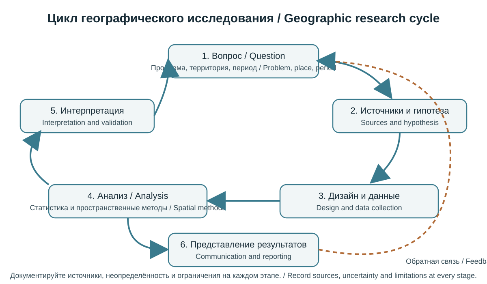
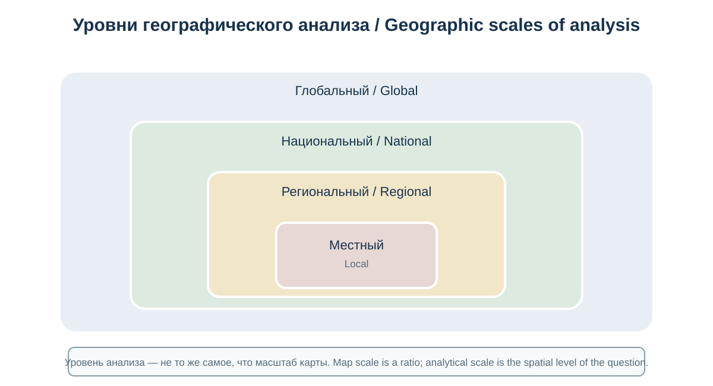
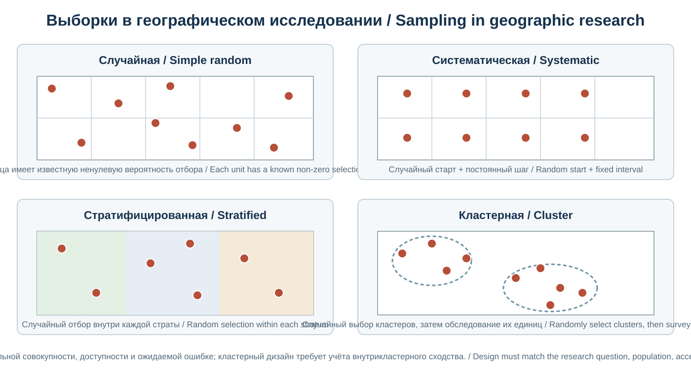
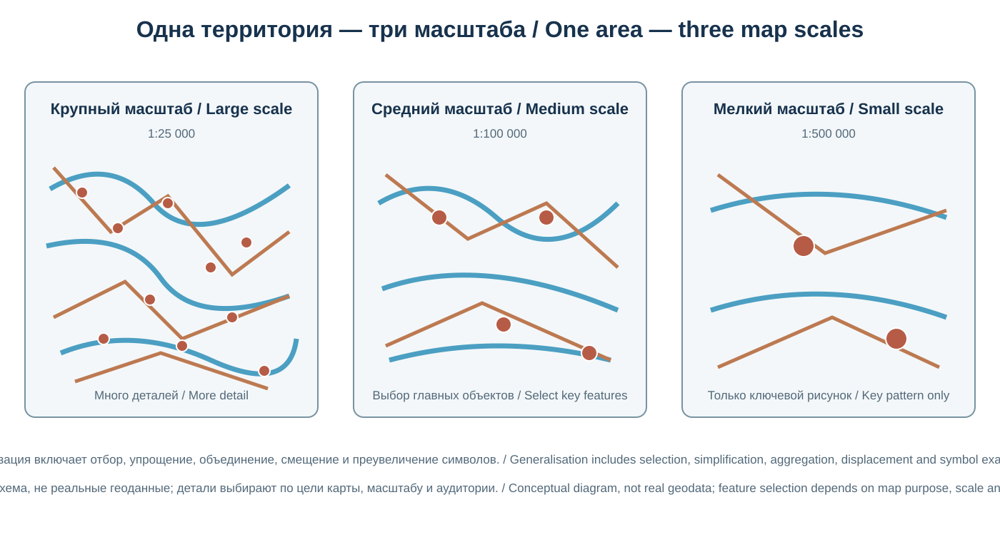
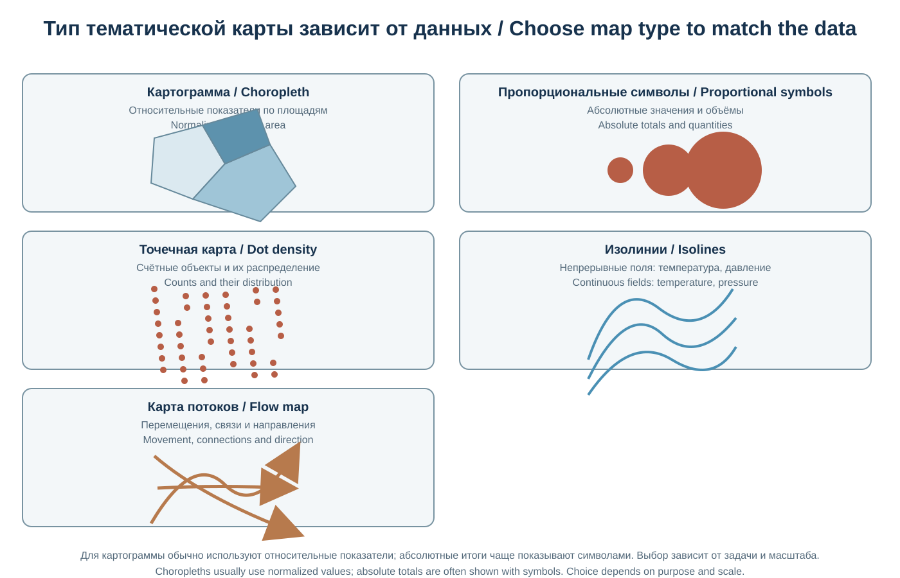
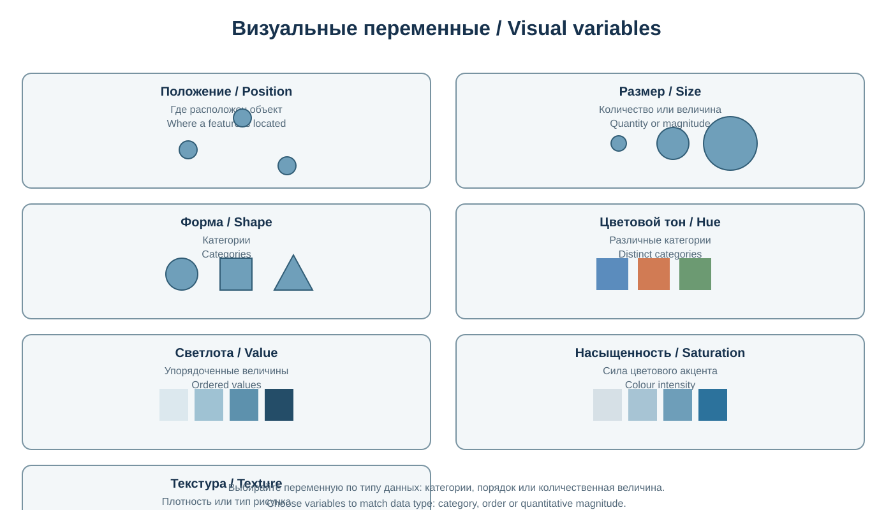
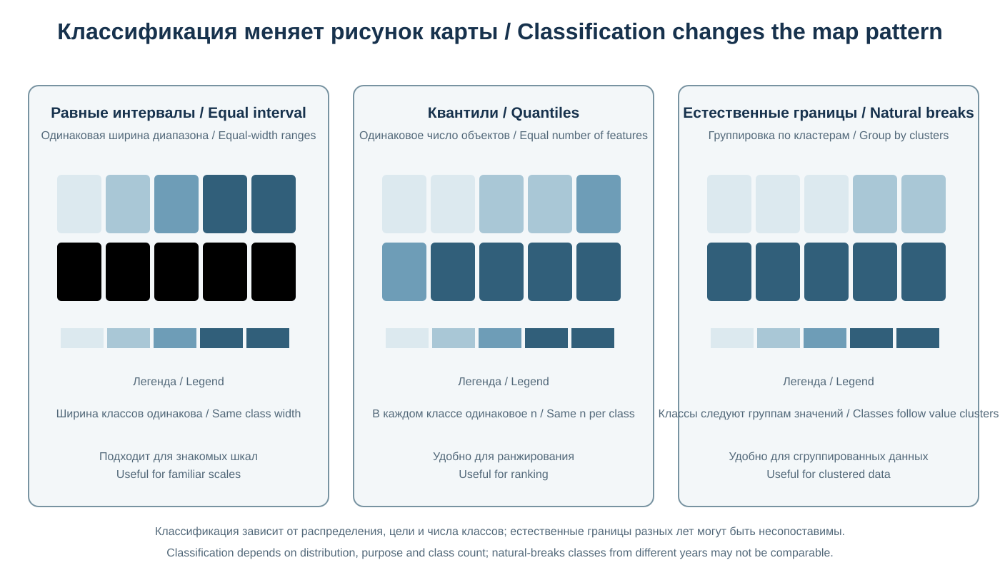
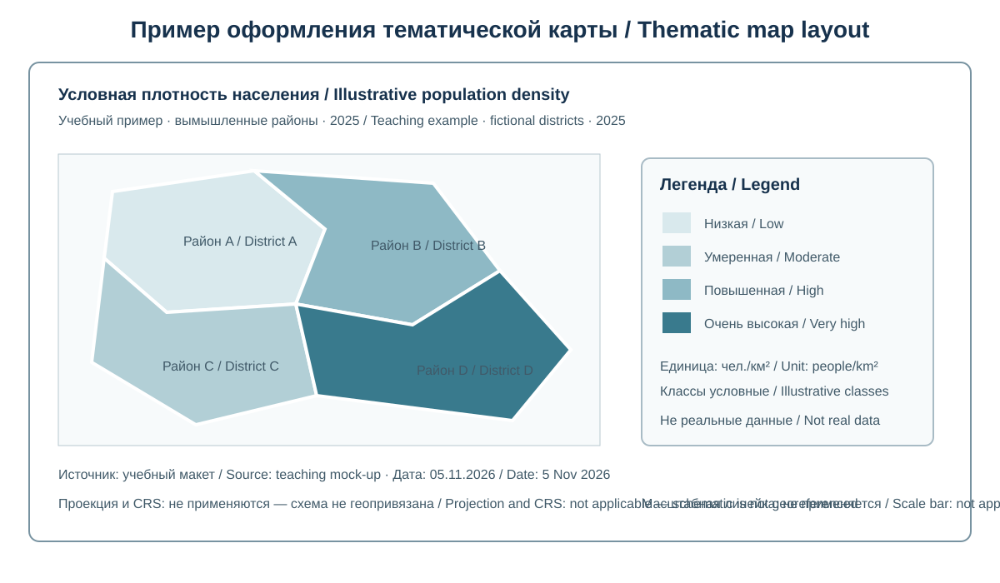
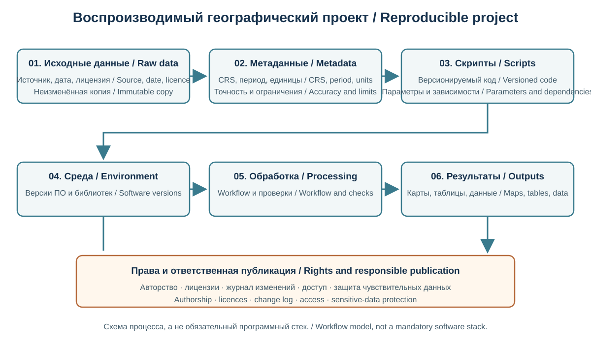

Глава 16. Географические исследования и картография
Chapter 16. Geographic Research and Cartography
Часть III. Современная география и технологии / Part III. Modern Geography and Technology
Научно-образовательный атлас географии / Scientific and Educational Geography Atlas
Цели главыChapter Objectives
География изучает пространственную организацию природы и общества, связи между территориями и процессы, изменяющие географическую оболочку. Географическое исследование объединяет постановку вопроса, сбор и проверку данных, пространственный анализ, объяснение закономерностей и представление результатов. Картография обеспечивает научно обоснованное отображение пространственной информации.
Эта глава завершает общую часть атласа. Она объединяет методы полевых и камеральных исследований, статистику, картографический дизайн, тематическое картографирование, пространственную выборку, научную визуализацию, воспроизводимость и ответственную коммуникацию результатов.
Geography investigates the spatial organisation of nature and society, relationships among places, and processes that transform the Earth system. Geographic research combines question formulation, data collection and validation, spatial analysis, explanation and communication. Cartography provides a rigorous framework for representing spatial information.
This chapter concludes the general geography section of the atlas. It brings together field and desk-based methods, statistics, cartographic design, thematic mapping, spatial sampling, scientific visualisation, reproducibility and responsible communication.
16.1. Географическое исследование: логика и этапыGeographic Research: Logic and Stages

Оригинальная двуязычная схема итеративного исследования; последовательность может повторяться при уточнении вопроса и метода.Original bilingual diagram of iterative inquiry; stages may repeat as the question and method are refined.
Исследование начинается с чётко сформулированной проблемы. Тема должна быть преобразована в исследовательский вопрос, на который можно ответить с помощью наблюдений, данных и обоснованного метода.
Типичная последовательность: 1. Постановка проблемы: определение явления, территории, периода и практической или научной значимости. 2. Обзор литературы и источников: анализ предыдущих исследований, карт, статистики и доступных наборов данных. 3. Формулировка цели и задач: определение того, что необходимо установить, измерить или объяснить. 4. Гипотеза или исследовательские вопросы: предварительное объяснение либо набор проверяемых вопросов. 5. Выбор масштаба и пространственных единиц: определение территории, периода и единиц наблюдения. 6. Методология: выбор полевых, дистанционных, статистических, картографических и качественных методов. 7. Сбор и контроль данных: документирование происхождения, точности, ограничений и пропусков. 8. Анализ: статистическая, пространственная и содержательная обработка. 9. Интерпретация: сопоставление результатов с гипотезой, теорией и контекстом. 10. Представление результатов: карты, графики, таблицы, текст и описание неопределённости.
Хорошее исследование различает описание, объяснение и причинный вывод. Пространственное совпадение двух явлений само по себе не доказывает, что одно вызвало другое.
Research begins with a clearly formulated problem. A topic should be turned into a research question that can be answered using observations, data and an appropriate method.
A typical sequence is: 1. Define the problem: identify the phenomenon, territory, period and scientific or practical significance. 2. Review literature and sources: analyse previous studies, maps, statistics and available datasets. 3. Set the aim and objectives: define what needs to be established, measured or explained. 4. Formulate a hypothesis or research questions: propose a preliminary explanation or a set of questions that can be tested. 5. Choose the scale and spatial units: define the territory, period and units of observation. 6. Select the methodology: choose field, remote-sensing, statistical, cartographic and qualitative methods. 7. Collect and check data: document provenance, accuracy, limitations and missing values. 8. Analyse: carry out statistical, spatial and substantive analysis. 9. Interpret: compare results with the hypothesis, theory and wider context. 10. Present results: communicate maps, graphs, tables, text and uncertainty.
Good research distinguishes description, explanation and causal inference. A spatial coincidence between two phenomena does not by itself prove that one caused the other.
16.2. Пространственный масштаб и территориальные единицыSpatial Scale and Areal Units

Уровень пространственного анализа не следует смешивать с масштабом карты.Do not confuse analytical scale with map scale.
Масштаб — ключевая характеристика географического анализа. Он включает пространственный охват, уровень детализации и размер единиц, по которым собираются и агрегируются данные.
Различают: - локальный масштаб: участок, населённый пункт, отдельная экосистема; - региональный масштаб: район, область, бассейн реки или группа территорий; - национальный масштаб: государство и его административные единицы; - глобальный масштаб: планетарные процессы и сравнение стран или регионов мира.
Изменение масштаба может менять наблюдаемую закономерность. Это связано, в частности, с проблемой изменяемых территориальных единиц (MAUP — Modifiable Areal Unit Problem): статистические результаты могут зависеть от того, как проведены границы зон и насколько крупными сделаны единицы анализа.
Следует избегать переноса закономерностей, выявленных для групп территорий, на отдельных людей или домохозяйства. Такая ошибка называется экологической ошибкой (ecological fallacy).
16.3. Полевые географические методыFieldwork Methods
Полевые исследования позволяют непосредственно наблюдать процессы и объекты, проверять карты и спутниковые интерпретации, собирать первичные измерения и фиксировать локальные особенности.
Основные методы: - маршрутные наблюдения и описание территории; - измерение координат, высот, расстояний и направлений; - отбор проб почвы, воды, горных пород и биологических материалов; - геоморфологическое описание форм рельефа; - метеорологические и гидрологические измерения; - фотофиксация с координатами и временем; - интервью, анкеты и наблюдение за использованием территории; - инвентаризация объектов инфраструктуры и землепользования.
Полевой протокол должен содержать цель, место, дату и время, приборы, единицы измерения, методику, сведения об исполнителе и условия наблюдения. Для проб важны правила отбора, маркировки, хранения и транспортировки.
Приборы требуют калибровки и проверки. Измерения без указания единиц, точности и метода трудно сопоставлять и невозможно надёжно воспроизвести.
Fieldwork allows researchers to observe processes and features directly, check maps and satellite interpretations, collect primary measurements and record local conditions.
Common methods include: - route-based observation and description of an area; - measurement of coordinates, elevations, distances and directions; - sampling of soil, water, rocks and biological materials; - geomorphological description of landforms; - meteorological and hydrological measurements; - georeferenced photographs with time records; - interviews, questionnaires and observation of land use; and - inventories of infrastructure and land-use features.
A field protocol should state the purpose, location, date and time, instruments, units, method, observer and conditions. Samples require clear procedures for collection, labelling, storage and transport.
Instruments must be calibrated and checked. Measurements without units, accuracy and method details are difficult to compare and cannot be reliably reproduced.
16.4. Географические данные и их качествоGeographic Data and Data Quality
Географические данные включают пространственную привязку и описательные характеристики. Они могут быть первичными (собранными в исследовании) и вторичными (полученными из существующих источников).
Основные типы: - координаты и геометрии точек, линий и полигонов; - растровые изображения и цифровые модели; - статистические таблицы с территориальными кодами; - временные ряды; - текстовые и качественные наблюдения; - административные, кадастровые и инфраструктурные данные.
Качество оценивается по нескольким измерениям: - точность: близость значения к истинному или принятому эталонному значению; - прецизионность: согласованность повторных измерений; - полнота: наличие необходимых объектов и атрибутов; - логическая согласованность: отсутствие противоречий и нарушений структуры; - актуальность: соответствие времени исследования; - позиционная точность: надёжность пространственного положения; - тематическая точность: правильность присвоенных классов и значений; - происхождение (lineage): история создания, преобразования и использования данных.
Точность не следует путать с разрешением. Высокодетальная карта может иметь позиционные смещения, а статистика с большим числом знаков после запятой — низкую фактическую точность.
Geographic data include both spatial referencing and descriptive characteristics. They may be primary (collected during a study) or secondary (obtained from existing sources).
Main types include: - coordinates and point, line and polygon geometries; - raster images and digital models; - statistical tables with territorial codes; - time series; - textual and qualitative observations; and - administrative, cadastral and infrastructure data.
Data quality is assessed across several dimensions: - accuracy: closeness of a value to the true or accepted reference value; - precision: consistency among repeated measurements; - completeness: whether the required features and attributes are present; - logical consistency: absence of contradictions and structural errors; - currency: how well the data match the period of the study; - positional accuracy: reliability of geographic location; - thematic accuracy: correctness of assigned classes and values; and - lineage: the history of data creation, transformation and use.
Accuracy should not be confused with resolution. A highly detailed map may still contain positional shifts, while statistics reported to many decimal places may have low actual accuracy.
16.5. Выборка и дизайн наблюденийSampling and Study Design

Схемы условные; выбор дизайна зависит от генеральной совокупности, вопроса исследования и требуемой точности.Illustrative designs; selection depends on the population, research question and required precision.
Сплошное обследование всей территории часто невозможно, поэтому исследователь использует выборку. Её дизайн должен соответствовать вопросу и пространственной структуре явления.
Основные схемы: - простая случайная выборка: каждый элемент генеральной совокупности имеет известную вероятность отбора; - систематическая выборка: точки размещаются через заданный интервал или по регулярной сетке; - стратифицированная выборка: территория делится на однородные слои, из которых отбираются наблюдения; - кластерная выборка: отбираются группы объектов или участков; - целевой (экспертный) отбор: выбираются участки, важные для конкретного вопроса; он полезен для разведочного обследования, но не всегда позволяет делать статистические обобщения.
Для пространственной выборки важно учитывать автокорреляцию: соседние точки часто похожи друг на друга. Если это игнорировать, эффективный объём независимой информации может оказаться меньше числа измерений.
План выборки следует составлять до сбора данных. Необходимо фиксировать правила исключения наблюдений и причины отсутствия данных.
16.5.1. Разобранный пример: пропорциональная стратифицированная выборкаWorked Example: Proportionate Stratified Sampling
Предположим, исследователь изучает доступность питьевой воды в 1 000 домохозяйств трёх условных горных зон. В нижней зоне расположено 500 домохозяйств, в средней — 300, в верхней — 200. Планируется опросить 100 домохозяйств, распределив выборку пропорционально численности каждой зоны.
Доля каждой зоны в общей совокупности:
- нижняя: 500 / 1 000 = 50%; выборка — 100 × 0,50 = 50 домохозяйств;
- средняя: 300 / 1 000 = 30%; выборка — 100 × 0,30 = 30 домохозяйств;
- верхняя: 200 / 1 000 = 20%; выборка — 100 × 0,20 = 20 домохозяйств.
Итого: 50 + 30 + 20 = 100 домохозяйств.
Такое распределение сохраняет пропорции трёх зон в выборке, но само по себе не гарантирует репрезентативность. Внутри каждой зоны домохозяйства следует отбирать по прозрачной случайной процедуре, обеспечить охват труднодоступных поселений и учитывать отказы от участия. Если в верхней зоне важно отдельно изучить редкие проблемы водоснабжения, исследователь может намеренно увеличить её выборку, но при объединении результатов потребуется взвешивание.
Assume a researcher is studying drinking-water access among 1,000 households in three hypothetical mountain zones. There are 500 households in the lower zone, 300 in the middle zone and 200 in the upper zone. The planned sample is 100 households, allocated in proportion to each zone's population.
Each zone's share of the population is:
- lower zone: 500 / 1,000 = 50%; sample: 100 × 0.50 = 50 households;
- middle zone: 300 / 1,000 = 30%; sample: 100 × 0.30 = 30 households;
- upper zone: 200 / 1,000 = 20%; sample: 100 × 0.20 = 20 households.
Total: 50 + 30 + 20 = 100 households.
This allocation preserves the proportions of the three zones in the sample, but does not by itself guarantee representativeness. Households within each zone should be selected through a transparent random procedure, hard-to-reach settlements should be covered, and non-response should be considered. If the researcher needs to examine rare water-access problems in the upper zone, that zone may be deliberately oversampled; however, weighting will then be needed when combining results.
16.6. Количественные и качественные методыQuantitative and Qualitative Methods
Количественные методы работают с измеряемыми величинами и числовыми данными. Они применяются для расчёта плотности, темпов изменения, расстояний, корреляций, индексов и пространственных моделей.
Качественные методы помогают понять мотивы, практики, восприятие места, исторический контекст и институциональные процессы. К ним относятся интервью, фокус-группы, анализ документов, наблюдение и тематическое кодирование.
Смешанные методы (mixed methods) объединяют оба подхода. Например, карта доступности медицинских учреждений может быть дополнена интервью жителей о фактических барьерах: стоимости поездки, сезонности дорог, языковых и социальных факторах.
Выбор метода определяется вопросом исследования, а не модой или доступностью программного обеспечения.
Quantitative methods work with measurable quantities and numerical data. They are used to calculate density, rates of change, distances, correlations, indices and spatial models.
Qualitative methods help researchers understand motives, practices, perceptions of place, historical context and institutional processes. They include interviews, focus groups, document analysis, observation and thematic coding.
Mixed methods combine both approaches. For example, a map of access to healthcare facilities can be supplemented with interviews about actual barriers experienced by residents, such as travel costs, seasonal road conditions, language and social factors.
The research question should determine the method, not fashion or the availability of particular software.
16.7. Основы географической статистикиFundamentals of Geographic Statistics
Описательная статистика помогает обобщать распределение данных: - среднее арифметическое; - медиана; - мода; - минимум и максимум; - диапазон и межквартильный размах; - дисперсия и стандартное отклонение; - частоты и доли.
Среднее чувствительно к экстремальным значениям, тогда как медиана часто лучше описывает типичное значение при асимметричном распределении.
Для сравнения территорий применяются абсолютные и относительные показатели. Например, общее число жителей не эквивалентно плотности населения. Плотность рассчитывают как отношение численности к площади, причём выбор площади — административной, фактически освоенной или пригодной для проживания — влияет на интерпретацию.
Корреляция показывает статистическую связь, но не доказывает причинность. При пространственном анализе следует учитывать автокорреляцию, неоднородность территорий, смешивающие факторы и неопределённость измерений.
Descriptive statistics help summarise data distributions: - arithmetic mean; - median; - mode; - minimum and maximum; - range and interquartile range; - variance and standard deviation; and - frequencies and proportions.
The mean is sensitive to extreme values, whereas the median often describes a typical value better when a distribution is skewed.
Territorial comparisons use both absolute and relative indicators. For example, the total number of residents is not the same as population density. Density is calculated by dividing population by area, and the choice of area—administrative, actually settled or suitable for habitation—affects interpretation.
Correlation shows a statistical association but does not prove causation. Spatial analysis should also consider spatial autocorrelation, territorial heterogeneity, confounding factors and measurement uncertainty.
16.8. Пространственная статистика и закономерности размещенияSpatial Statistics and Patterns
Пространственная статистика исследует, как значения и объекты распределены в пространстве.
Основные понятия: - пространственная автокорреляция: сходство значений соседних объектов или участков; - кластеризация: концентрация объектов или высоких/низких значений; - пространственная неоднородность: различия характеристик между частями территории; - плотность точек: количество объектов на единицу площади; - горячие и холодные точки: статистически значимые зоны повышенной или пониженной концентрации относительно выбранной модели.
Индекс Морана (Moran's I) — один из показателей глобальной пространственной автокорреляции. Локальные статистики позволяют выявлять локальные кластеры и пространственные выбросы. Результаты зависят от определения соседства или матрицы пространственных весов.
Карта статистически значимых кластеров должна сопровождаться описанием метода, параметров, уровня значимости и множественного тестирования, если оно применялось.
Spatial statistics examines how values and features are distributed across space.
Key concepts include: - spatial autocorrelation: similarity among values in neighbouring features or areas; - clustering: concentration of features or high/low values; - spatial heterogeneity: differences in characteristics among parts of a territory; - point density: the number of features per unit area; and - hot and cold spots: statistically significant areas of higher or lower concentration relative to a selected model.
Moran's I is one measure of global spatial autocorrelation. Local statistics can identify local clusters and spatial outliers. Results depend on how neighbourhoods or spatial weights are defined.
A map of statistically significant clusters should describe the method, parameters, significance level and any multiple-testing correction that was applied.
16.9. Картография как наука и язык пространстваCartography as a Science and Language of Space
Картография изучает методы создания, анализа и использования карт. Карта — не нейтральная копия территории, а модель, в которой отобраны и обобщены сведения в соответствии с целью, масштабом и аудиторией.
Любая карта включает: - математическую основу: проекцию, координатную систему и масштаб; - географическое содержание: объекты и явления; - картографические знаки и графические переменные; - генерализацию; - легенду и пояснения; - элементы оформления и метаданные.
Карта должна отвечать на конкретный вопрос. Перегруженность деталями, несогласованные символы и неясная легенда затрудняют чтение даже при точных исходных данных.
Cartography studies the methods used to create, analyse and use maps. A map is not a neutral copy of a territory: it is a model in which information is selected and generalised according to purpose, scale and audience.
Every map includes: - a mathematical framework: projection, coordinate reference system and scale; - geographic content: features and phenomena; - map symbols and visual variables; - generalisation; - a legend and explanatory information; and - layout elements and metadata.
A map should answer a specific question. Excessive detail, inconsistent symbols and an unclear legend can make a map difficult to read even when the source data are accurate.
16.10. Картографическая проекция, масштаб и генерализацияProjection, Scale and Generalisation

Схема условная; генерализация зависит от цели карты, масштаба, аудитории и плотности объектов.Conceptual diagram; generalisation depends on map purpose, scale, audience and feature density.
Картографическая проекция преобразует координаты поверхности Земли в плоскость. Любая плоская проекция искажает хотя бы одно из свойств — площадь, форму, расстояние или направление. Выбор зависит от назначения карты и территории.
Масштаб показывает отношение расстояния на карте к соответствующему расстоянию на местности. При масштабе 1:100 000 один сантиметр на карте соответствует одному километру на местности при соблюдении принятой проекционной модели.
Картографическая генерализация — отбор, упрощение, объединение и смещение объектов ради читаемости карты на выбранном масштабе. Небольшие реки, дороги и населённые пункты могут быть опущены или условно смещены. Генерализация должна сохранять смысл и не создавать ложного впечатления.
A map projection transforms coordinates on the Earth's surface onto a plane. Every flat map projection distorts at least one property—area, shape, distance or direction. The choice depends on the purpose of the map and the territory being represented.
Map scale is the ratio between a distance on the map and the corresponding distance on the ground. At a scale of 1:100,000, one centimetre on the map represents one kilometre on the ground, subject to the adopted projection model.
Cartographic generalisation is the selection, simplification, combination and displacement of features to keep a map readable at a chosen scale. Small rivers, roads and settlements may be omitted or symbolically displaced. Generalisation should preserve meaning and must not create a misleading impression.
16.11. Тематическая картографияThematic Cartography

Условные примеры; тип карты выбирают по типу данных.Schematic examples; choose map type to match the data.
Тематическая карта показывает распределение определённого явления: населения, осадков, температуры, землепользования, доходов, риска или доступности услуг.
Основные способы: - хороплетная карта: окрашивает территориальные единицы по относительному показателю, например плотности населения; - карта пропорциональных символов: показывает абсолютные значения размером знаков; - изолинии: соединяют точки равного значения непрерывного поля, например высоты или давления; - точечная карта: отображает количество явления точками, каждая из которых соответствует заданной величине; - карта потоков: показывает направления и, при наличии подходящих данных, относительную интенсивность перемещения людей, товаров, воды или энергии; - карта плотности: представляет пространственную концентрацию явления, например плотность точечных объектов или оценённую плотность событий; - картографическая диаграмма: сочетает карту с графическими показателями.
Хороплетные карты обычно подходят для нормированных показателей — долей, плотности, коэффициентов. Использование абсолютных чисел может вводить в заблуждение, если территориальные единицы существенно различаются по площади или населению.
Выбор проекции не исправляет неверный тип тематической карты. Для абсолютных итогов часто лучше подходят пропорциональные символы или картограммы, а не хороплетная окраска территорий. Равновеликая проекция сама по себе также не делает карту «справедливой»: важно проверить, соответствует ли способ отображения смыслу переменной и задаче сравнения.
A projection choice cannot correct an inappropriate thematic map type. Absolute totals are often better shown with proportional symbols or cartograms than by colouring administrative areas as a choropleth. An equal-area projection does not automatically make a map “fair”: the display method must still match the meaning of the variable and the purpose of the comparison.
16.12. Цвет, символы и визуальная иерархияColour, Symbols and Visual Hierarchy

Не кодируйте важные различия только цветом.Never encode essential distinctions by colour alone.
Картографический дизайн управляет вниманием читателя и помогает различать классы, направления, величины и категории.
Важные визуальные переменные: - положение; - размер; - форма; - ориентация; - оттенок; - светлота; - насыщенность; - текстура.
Рекомендации: - последовательные цветовые шкалы применять для упорядоченных величин от низких к высоким; - расходящиеся шкалы — для значений относительно содержательного центра, например нуля или нормативного порога; - качественные палитры — для категорий без естественного порядка; - не кодировать единственное различие только красным и зелёным; - обеспечивать контраст текста и фона; - проверять читаемость в небольшом размере и при печати; - использовать символы, понятные целевой аудитории; - не перегружать карту декоративными элементами.
Цветовая шкала должна соответствовать смыслу данных. Равные визуальные интервалы не всегда соответствуют равным числовым интервалам, особенно при логарифмической классификации.
Cartographic design directs the reader's attention and helps distinguish classes, directions, magnitudes and categories.
Important visual variables include: - position; - size; - shape; - orientation; - hue; - lightness; - saturation; and - texture.
Recommendations: - use sequential colour schemes for ordered values from low to high; - use diverging schemes for values relative to a meaningful centre, such as zero or a regulatory threshold; - use qualitative palettes for categories without a natural order; - do not encode a single distinction only with red and green; - ensure sufficient contrast between text and background; - test legibility at small sizes and in print; - use symbols that are understandable to the target audience; and - avoid overloading the map with decorative elements.
A colour scale should match the meaning of the data. Equal visual intervals do not always correspond to equal numerical intervals, especially when logarithmic classification is used.
16.13. Классификация данных для картData Classification for Mapping

Учебный пример; точные границы Jenks вычисляют по исходным данным.Teaching example; exact Jenks breaks must be calculated from source data.
Для хороплетных и других тематических карт числовые данные часто группируются в классы. Выбор метода классификации влияет на визуальный вывод.
Распространённые методы: - равные интервалы; - квантильные интервалы; - естественные границы (Jenks); - стандартные отклонения; - заранее установленные нормативные или содержательные пороги.
Ни один метод не является универсально лучшим. Квантили обеспечивают одинаковое число территориальных единиц в каждом классе, но могут объединить близкие значения или разделить похожие. Равные интервалы просты, но при асимметричном распределении могут создавать пустые классы. Естественные границы оптимизируют внутриклассовую однородность в рамках алгоритма, но затрудняют сравнение карт разных лет, если границы классов пересчитываются каждый раз.
Для временного сравнения часто целесообразно фиксировать границы классов, чтобы изменение цвета отражало изменение показателя, а не изменение метода классификации.
Numerical data on choropleth and other thematic maps are often grouped into classes. The choice of classification method affects the visual message.
Common methods include: - equal intervals; - quantile intervals; - natural breaks (Jenks); - standard deviations; and - predefined regulatory or meaningful thresholds.
No method is universally best. Quantiles place the same number of geographic units in each class, but may group quite different values or separate similar ones. Equal intervals are simple, but can create empty classes when the distribution is highly skewed. Natural breaks optimise within-class similarity under the algorithm, but make comparisons between maps from different years more difficult if class boundaries are recalculated each time.
For comparisons over time, it is often useful to keep class boundaries fixed so that a change in colour reflects a change in the indicator rather than a change in the classification method.
16.14. Карта как аргумент: подписи, легенда и источникиMap as an Argument: Labels, Legend and Sources

Схема не геопривязана; масштабная линейка и CRS неприменимы.Schematic is not georeferenced; scale bar and CRS are not applicable.
Карта должна содержать достаточно элементов, чтобы читатель мог правильно её интерпретировать: - ясный заголовок; - легенду с единицами измерения; - масштаб или масштабную линейку, если это необходимо; - указание проекции и координатной системы для технических карт; - дату данных и дату создания карты; - источник и лицензию; - автора или организацию; - пояснения к методам классификации; - обозначение неопределённости и ограничений, когда они существенны.
Стрелка севера не обязательна на каждой карте, особенно если ориентация очевидна или карта снабжена координатной сеткой. Декоративные элементы не должны подменять недостающие метаданные.
Подписи должны быть иерархичны и не перекрывать важные объекты. При необходимости применяются выноски и смещение знаков, но расположение должно оставаться географически понятным.
A map should contain enough information for the reader to interpret it correctly: - a clear title; - a legend with units of measurement; - a scale or scale bar, where needed; - the projection and coordinate reference system for technical maps; - the date of the data and the date the map was created; - the source and licence; - the author or organisation; - an explanation of the classification method; and - an indication of uncertainty and limitations when these are important.
A north arrow is not required on every map, especially when orientation is obvious or a coordinate grid is provided. Decorative elements must not replace missing metadata.
Labels should have a clear hierarchy and should not cover important features. Callouts and symbol displacement may be used when necessary, but the geographic location should remain understandable.
16.15. Картографическая генерализация и мультимасштабные картыGeneralisation and Multiscale Mapping
Один и тот же набор данных нельзя одинаково показывать на карте мира, страны и города. При уменьшении масштаба мелкие детали исчезают, линии упрощаются, а группы объектов могут объединяться.
Основные операции генерализации: - отбор; - упрощение линий; - сглаживание; - объединение; - смещение; - преувеличение важных объектов; - агрегация и изменение символики.
В цифровых веб-картах генерализация часто выполняется для разных уровней приближения. Необходимо следить, чтобы переходы между уровнями не создавали противоречивые представления и не меняли смысл тематических данных.
The same dataset cannot be shown in the same way on a world map, a national map and a city map. As map scale becomes smaller, minor details disappear, lines are simplified and groups of features may be combined.
Common generalisation operations include: - selection; - line simplification; - smoothing; - aggregation; - displacement; - exaggeration of important features; - aggregation of data and changes in symbolisation.
In digital web maps, generalisation is often performed for different zoom levels. Transitions between levels should not create contradictory representations or change the meaning of thematic data.
16.16. Веб-картография и интерактивная визуализацияWeb Cartography and Interactive Visualisation
Веб-карты позволяют пользователю менять масштаб, включать слои, искать объекты и получать атрибутивную информацию. Они могут быть статическими, интерактивными или встроенными в аналитические панели.
Ключевые принципы: - быстрый отклик и разумный объём передаваемых данных; - понятные элементы управления; - доступность с мобильных устройств; - альтернативное текстовое описание важных результатов; - корректная работа легенды при включении и выключении слоёв; - ясное обозначение даты и актуальности данных; - защита персональной и чувствительной информации.
Интерактивность не делает карту автоматически более точной или понятной. Она должна помогать исследовательскому вопросу, а не отвлекать от него.
Web maps allow users to change scale, switch layers on and off, search for features and view attribute information. They may be static, interactive or embedded in analytical dashboards.
Key principles include: - fast response and a reasonable volume of transmitted data; - understandable controls; - accessibility on mobile devices; - alternative text for important results; - a legend that remains correct as layers are switched on and off; - clear information about the date and currency of the data; and - protection of personal and sensitive information.
Interactivity does not automatically make a map more accurate or easier to understand. It should support the research question rather than distract from it.
16.17. Воспроизводимость, открытая наука и управление проектомReproducibility, Open Science and Project Management

Документируйте версии, лицензии, параметры и контроль доступа.Record versions, licences, parameters and access control.
Воспроизводимое исследование позволяет другому специалисту понять, откуда получены данные, какие преобразования выполнены и как получен результат.
Хорошая практика включает: - хранение исходных данных отдельно от обработанных; - документирование источников, версий и лицензий; - сохранение параметров обработки и кода; - ведение журнала изменений; - использование понятной структуры каталогов и именования; - описание системы координат, единиц и временных интервалов; - контроль версий; - публикацию методики и ограничений; - проверку результатов независимым специалистом.
Открытая наука предполагает доступность материалов настолько, насколько это допускают закон, лицензии, конфиденциальность и безопасность. Открытость не означает безусловную публикацию персональных, уязвимых или стратегически чувствительных геоданных.
16.17.1. Как сделать картографический анализ воспроизводимымMaking a Mapping Analysis Reproducible
Результат ГИС-анализа должен быть не только наглядным, но и проверяемым. Карта без описания исходных данных и операций не позволяет понять, можно ли повторить расчёт и насколько ему можно доверять.
Минимальный паспорт анализа: 1. исследовательский вопрос и территория; 2. дата или период наблюдений; 3. источники, версии, лицензии и даты загрузки слоёв; 4. система координат и единицы измерения; 5. правила очистки, преобразования и исключения записей; 6. параметры операций (например, радиус буфера, алгоритм маршрутизации, порог классификации); 7. программное обеспечение и его версия; 8. контрольные проверки, известные ограничения и дата подготовки карты.
Условный пример. Два исследователя оценивают число жителей в пределах 15 минут пути от медицинского учреждения. Первый использует расстояние по прямой, второй — дорожную сеть с учётом рек и мостов. Различие результатов не обязательно означает ошибку: исследователи измеряли разные виды доступности. Чтобы сравнение было осмысленным, нужно согласовать определение доступности, сеть, скорость движения, сезон и исходные данные о населении и учреждениях.
Практика контроля. Сохраните исходные слои без изменений, а обработанные версии — отдельно. Запишите порядок операций и параметры; проверьте несколько объектов вручную; повторите расчёт после закрытия и повторного открытия проекта. Если данные нельзя распространять, опубликуйте описание, агрегированные результаты и безопасный воспроизводимый пример, не раскрывающий чувствительные координаты.
Учебное задание. Подготовьте паспорт для анализа доступности школы или клиники. Другой учащийся должен суметь понять по нему, какие данные и параметры нужны для повторения работы, а также определить, какие результаты нельзя считать точными из-за ограничений исходных данных.
A GIS result should be not only clear but also verifiable. A map without documentation of its source data and processing steps does not show whether the analysis can be reproduced or how much confidence it deserves.
Minimum analysis record: 1. research question and study area; 2. observation date or period; 3. data sources, versions, licences and download dates; 4. coordinate reference system and measurement units; 5. rules for cleaning, transforming and excluding records; 6. operation parameters (for example, buffer radius, routing algorithm or classification threshold); 7. software and version; 8. validation checks, known limitations and map-production date.
Hypothetical example. Two researchers estimate the population living within a 15-minute journey of a health facility. The first uses straight-line distance; the second uses a road network that accounts for rivers and bridges. Different results do not necessarily indicate an error: the researchers measured different forms of accessibility. Meaningful comparison requires an agreed definition of access, network, travel speed, season and source data for population and facilities.
Quality-control practice. Preserve original layers unchanged and store processed versions separately. Record the sequence of operations and parameters; manually inspect several features; and repeat the analysis after closing and reopening the project. If data cannot be shared, publish the method, aggregated results and a safe reproducible example that does not expose sensitive coordinates.
Activity. Prepare an analysis record for measuring access to a school or clinic. Another learner should be able to identify the data and parameters needed to repeat the work and determine which results cannot be considered precise because of source-data limitations.
16.18. Географическая коммуникация и научная добросовестностьGeographic Communication and Research Integrity
Географические результаты представляют в научных статьях, атласах, отчётах, публичных картах, презентациях и цифровых панелях. Формат должен соответствовать аудитории и задаче.
Научная добросовестность требует: - не скрывать данные, противоречащие гипотезе; - различать измеренные значения и модельные оценки; - не выдавать корреляцию за причинность; - сообщать об ограничениях и неопределённости; - указывать авторство и источники; - не манипулировать цветовыми шкалами, обрезкой осей и классификацией; - не создавать ложную точность; - исправлять выявленные ошибки и сохранять историю исправлений.
При работе с сообществами необходимо ясно объяснять, кто собирает данные, с какой целью, кто получит доступ и какие решения могут быть приняты на их основе.
16.18.1. Как оформить воспроизводимое географическое исследованиеMaking a Geographic Study Reproducible
Воспроизводимое исследование позволяет другому специалисту понять происхождение данных, принятые решения и последовательность получения результата. Это не всегда означает абсолютно идентичные измерения: полевые условия, версии данных и программное обеспечение могут различаться.
Минимальная документация включает исследовательский вопрос; территорию и период; источники и версии данных; критерии отбора наблюдений; методы сбора и обработки; систему координат и преобразования; версии программных инструментов; параметры моделей; оценку неопределённости; ограничения и этические решения.
Исходные данные следует хранить отдельно от очищенных и производных слоёв. Для каждого шага обработки фиксируют, что изменено, почему, каким инструментом и с какими параметрами. Для скриптов и текстов полезен контроль версий; для больших наборов данных — идентификатор версии или контрольная сумма.
Открытость с ответственностью. Координаты уязвимых видов, персональные сведения и данные о критической инфраструктуре могут требовать ограничения доступа или пространственного обобщения. Следует объяснить, какие сведения не опубликованы и как это влияет на проверяемость результата.
Задание. Подготовьте одностраничный паспорт условного исследования оползневой опасности: вопрос, данные, период, методы, версии инструментов, ограничения, меры защиты чувствительных данных и способ повторить ключевой анализ.
A reproducible study allows another specialist to understand data provenance, decisions and the sequence used to produce a result. It does not always mean absolutely identical measurements: field conditions, data versions and software may differ.
Minimum documentation includes the research question; study area and period; data sources and versions; observation-selection criteria; collection and processing methods; coordinate system and transformations; software versions; model parameters; uncertainty assessment; limitations; and ethical decisions.
Keep original data separate from cleaned and derived layers. For every processing step, record what changed, why, which tool was used and with what parameters. Version control is useful for scripts and text; large datasets can be identified by a version or checksum.
Openness with responsibility. Coordinates of vulnerable species, personal information and critical-infrastructure data may require restricted access or spatial aggregation. Explain which information is not published and how this affects verification.
Activity. Prepare a one-page protocol for a hypothetical landslide-hazard study: question, data, period, methods, software versions, limitations, sensitive-data safeguards and steps needed to repeat the key analysis.
16.18.2. Как проверить, не вводит ли карта в заблуждениеChecking Whether a Map Misleads
Карта может быть технически аккуратной и при этом создавать неверное впечатление. Перед публикацией проверяют не только орфографию и качество изображения, но и то, соответствует ли способ визуализации данным и вопросу исследования.
Пять проверок перед выпуском:
- Знаменатель и нормирование. Абсолютные числа часто отражают размер населения или территории. Для сравнения интенсивности могут понадобиться показатели на душу населения, площадь или число объектов риска — с ясным объяснением выбора знаменателя.
- Классы легенды. Интервалы должны быть понятны и не создавать искусственные скачки. Метод классификации (равные интервалы, квантиль, естественные разрывы и др.) указывают явно.
- Цветовая шкала. Последовательная шкала подходит для величин от малого к большому; расходящаяся — для отклонений вокруг осмысленного нуля или базового значения. Категории нельзя кодировать так, чтобы цвет создавал ложный порядок.
- Площадные искажения. На карте мира большие по площади страны визуально доминируют. Для показателей населения или экономики могут быть уместны картограммы, но их геометрическое искажение должно быть очевидно читателю.
- Неопределённость и пропуски. Отсутствие данных нельзя окрашивать как нулевое значение. Покажите пропуски, границы доверия или ограничения пространственного разрешения, если они влияют на вывод.
Практическая проверка. Попросите читателя без пояснений ответить на вопрос, который должна раскрывать карта. Если он делает вывод, не поддерживаемый данными, проверьте легенду, заголовок, классификацию, подписи и масштаб. Альтернативная версия карты может показать, насколько результат зависит от выбранного метода.
Учебное задание. Выберите карту с региональными показателями и подготовьте две версии: абсолютные значения и нормированные значения. Сравните, какие территории визуально выходят на первый план, и объясните, почему обе карты могут быть корректными, но отвечать на разные вопросы.
A map can be technically polished and still create a misleading impression. Before publication, check not only spelling and image quality but also whether the visualisation matches the data and the research question.
Five checks before release:
- Denominator and normalisation. Absolute counts often reflect population or area size. Comparing intensity may require rates per person, per unit area or per exposed asset, with the choice of denominator explained.
- Legend classes. Class intervals should be understandable and should not create artificial jumps. State the classification method (equal interval, quantile, natural breaks, etc.).
- Colour scheme. A sequential scheme suits values from low to high; a diverging scheme suits departures around a meaningful zero or baseline. Categories should not be coloured in a way that implies a false order.
- Area distortion. Large countries dominate world maps visually. Cartograms may be appropriate for population or economic indicators, but their geometric distortion must be clear to readers.
- Uncertainty and missing data. Missing data must not be coloured as zero. Show gaps, confidence limits or spatial-resolution constraints where they affect interpretation.
Practical check. Ask a reader to answer the question the map is intended to address without additional explanation. If the reader draws a conclusion unsupported by the data, review the legend, title, classification, labels and scale. An alternative map can reveal how much the result depends on the selected method.
Activity. Select a map with regional indicators and prepare two versions: absolute values and normalised values. Compare which areas become visually prominent and explain why both maps may be valid while answering different questions.
16.1. Geographic Research: Logic and Stages
Research begins with a clearly formulated problem. A topic must be turned into a research question that can be answered through observation, data and a justified method.
A typical sequence includes: 1. Define the problem: identify the phenomenon, territory, period and scientific or practical significance. 2. Review literature and sources: examine previous studies, maps, statistics and available datasets. 3. Set the aim and objectives: specify what must be established, measured or explained. 4. Formulate a hypothesis or research questions: propose a preliminary explanation or a set of testable questions. 5. Choose scale and spatial units: define the study area, period and units of observation. 6. Design the methodology: select field, remote-sensing, statistical, cartographic and qualitative methods. 7. Collect and check data: document provenance, accuracy, limitations and missing information. 8. Analyse: process the information statistically, spatially and substantively. 9. Interpret: compare findings with the hypothesis, theory and context. 10. Communicate results: use maps, charts, tables and text, and describe uncertainty.
Good research distinguishes description, explanation and causal inference. Spatial coincidence between two phenomena does not by itself prove that one caused the other.
16.2. Spatial Scale and Areal Units
Scale is a key characteristic of geographical analysis. It includes spatial coverage, level of detail and the size of units used to collect and aggregate data.
Common levels include local (a site, settlement or ecosystem); regional (a district, oblast, river basin or group of territories); national (a state and its administrative units); and global (planetary processes and comparisons between countries or world regions).
Changing scale may change the observed pattern. This is related to the Modifiable Areal Unit Problem (MAUP): statistical results may depend on how zones are bounded and how large the units of analysis are.
Avoid transferring patterns observed for groups of territories to individuals or households. This error is known as the ecological fallacy.
16.3. Fieldwork Methods
Fieldwork allows researchers to observe processes and features directly, check maps and satellite interpretations, collect primary measurements and record local conditions.
Methods include route surveys and site descriptions; measurement of coordinates, elevation, distance and direction; sampling of soil, water, rocks and biological material; geomorphological description of landforms; meteorological and hydrological measurements; georeferenced photography with date and time; interviews, questionnaires and observation of land use; and inventories of infrastructure and land-use features.
A field protocol should record the objective, location, date and time, instruments, units, method, observer and conditions. For samples, selection, labelling, storage and transport procedures are important.
Instruments require calibration and checks. Measurements without units, accuracy information and a stated method are difficult to compare and cannot be reliably reproduced.
16.4. Geographic Data and Data Quality
Geographic data combine spatial referencing with descriptive characteristics. They may be primary (collected during the study) or secondary (obtained from existing sources).
Main types include coordinates and point, line and polygon geometries; raster imagery and digital models; statistical tables with territorial codes; time series; textual and qualitative observations; and administrative, cadastral and infrastructure data.
Quality is assessed across several dimensions: - accuracy: closeness to a true or accepted reference value; - precision: consistency of repeated measurements; - completeness: presence of required features and attributes; - logical consistency: absence of contradictions and structural violations; - currency: relevance to the study period; - positional accuracy: reliability of geographic location; - thematic accuracy: correctness of assigned classes and values; and - lineage: the history of data creation, transformation and use.
Accuracy should not be confused with resolution. A highly detailed map may contain positional shifts, while statistics with many decimal places may still have low actual accuracy.
16.5. Sampling and Study Design
A complete survey of an entire territory is often impossible, so researchers use a sample. Its design should match the research question and the spatial structure of the phenomenon.
Common designs include: - simple random sampling: each unit in the population has a known probability of selection; - systematic sampling: points are placed at set intervals or on a regular grid; - stratified sampling: the area is divided into relatively homogeneous strata, from which observations are selected; - cluster sampling: groups of objects or sites are selected; and - purposive or expert sampling: sites important to a specific question are selected. This is useful for exploratory work but may not support statistical generalisation.
Spatial sampling must consider autocorrelation: neighbouring points often resemble one another. If this is ignored, the effective amount of independent information may be smaller than the number of measurements.
The sampling plan should be prepared before data collection. Rules for excluding observations and reasons for missing data should be documented.
16.6. Quantitative and Qualitative Methods
Quantitative methods work with measurable quantities and numerical data. They are used to calculate density, rates of change, distances, correlations, indices and spatial models.
Qualitative methods help explain motivations, practices, perceptions of place, historical context and institutional processes. They include interviews, focus groups, document analysis, observation and thematic coding.
Mixed methods combine both approaches. For example, a map of access to health facilities may be supplemented by interviews with residents about actual barriers, including travel cost, seasonal roads, language and social factors.
The research question should determine the method, not fashion or the availability of software.
16.7. Fundamentals of Geographic Statistics
Descriptive statistics summarise data distributions. Common measures include the arithmetic mean, median, mode, minimum and maximum, range and interquartile range, variance and standard deviation, frequencies and proportions.
The mean is sensitive to extreme values, whereas the median often better represents a typical value in a skewed distribution.
Absolute and relative indicators are used to compare territories. For example, total population is not the same as population density. Density is calculated as population divided by area, but the choice of area—administrative, actually inhabited or suitable for settlement—affects interpretation.
Correlation indicates a statistical relationship but does not prove causation. Spatial analysis should account for autocorrelation, territorial heterogeneity, confounding factors and measurement uncertainty.
16.8. Spatial Statistics and Spatial Patterns
Spatial statistics examines how values and features are distributed across space.
Key concepts include: - spatial autocorrelation: similarity between values in neighbouring features or locations; - clustering: concentration of features or high/low values; - spatial heterogeneity: differences between parts of a territory; - point density: the number of features per unit area; and - hot spots and cold spots: statistically significant areas of elevated or reduced concentration relative to a selected model.
Moran's I is a measure of global spatial autocorrelation. Local statistics can identify local clusters and spatial outliers. Results depend on the definition of neighbourhood or the spatial-weights matrix.
A map of statistically significant clusters should describe the method, parameters, significance level and any correction for multiple testing.
16.9. Cartography as a Science and Language of Space
Cartography studies the methods of creating, analysing and using maps. A map is not a neutral copy of a territory; it is a model in which information is selected and generalised according to purpose, scale and audience.
Every map includes a mathematical basis (projection, coordinate system and scale); geographic content; cartographic symbols and visual variables; generalisation; a legend and explanations; and layout elements and metadata.
A map should answer a specific question. Excessive detail, inconsistent symbols and an unclear legend can make it difficult to read even when the source data are accurate.
16.10. Projection, Scale and Generalisation
A map projection transforms coordinates on Earth's surface to a plane. Every flat projection distorts at least one property: area, shape, distance or direction. Selection depends on the map's purpose and the territory.
Scale expresses the relationship between distance on the map and the corresponding distance on the ground. At a scale of 1:100,000, one centimetre on the map represents one kilometre on the ground, subject to the adopted projection model.
Cartographic generalisation is the selection, simplification, combination and displacement of features to maintain readability at a chosen scale. Small rivers, roads and settlements may be omitted or symbolically displaced. Generalisation should preserve meaning and avoid creating a false impression.
16.11. Thematic Cartography
A thematic map shows the distribution of a particular phenomenon, such as population, precipitation, temperature, land use, income, risk or service accessibility.
Common methods include: - choropleth maps: colour territorial units according to a relative indicator, such as population density; - proportional-symbol maps: show absolute values through symbol size; - isolines: connect points with equal values in a continuous field, such as elevation or pressure; - dot maps: represent quantities with dots, each corresponding to a specified amount; - flow maps: show movement of people, goods, water or energy; - density maps: represent the concentration of a phenomenon; and - cartodiagrams: combine maps with graphical indicators.
Choropleth maps are generally appropriate for normalised indicators such as shares, densities and rates. Absolute numbers may mislead when territorial units differ substantially in area or population.
16.12. Colour, Symbols and Visual Hierarchy
Cartographic design guides the reader's attention and helps distinguish classes, directions, quantities and categories.
Important visual variables include position, size, shape, orientation, hue, lightness, saturation and texture.
General guidance: - use sequential colour schemes for ordered values from low to high; - use diverging schemes for values relative to a meaningful centre, such as zero or a threshold; - use qualitative palettes for categories without a natural order; - do not encode the only distinction using red and green; - maintain sufficient text/background contrast; - check readability at small sizes and in print; - use symbols that are understandable to the target audience; and - avoid excessive decorative elements.
A colour scheme should match the meaning of the data. Equal visual intervals do not always correspond to equal numerical intervals, especially under logarithmic classification.
16.13. Data Classification for Mapping
Numerical data are often grouped into classes for choropleth and other thematic maps. The classification method affects the visual message.
Common methods include equal intervals; quantiles; natural breaks (Jenks); standard deviations; and predefined normative or meaningful thresholds.
No method is universally best. Quantiles place an equal number of territorial units in each class, but may group close values or separate similar ones. Equal intervals are simple but may create empty classes in skewed distributions. Natural breaks optimise within-class homogeneity under the algorithm but can make comparisons between maps from different years difficult if class boundaries are recalculated each time.
For time comparisons, it may be useful to fix class boundaries so that a colour change reflects a change in the indicator rather than a change in classification.
16.14. The Map as an Argument: Labels, Legend and Sources
A map should contain enough information for correct interpretation: - a clear title; - a legend with units; - a scale or scale bar where needed; - projection and coordinate system for technical maps; - data date and map-production date; - source and licence; - author or organisation; - explanation of the classification method; and - uncertainty and limitations where relevant.
A north arrow is not required on every map, especially when orientation is obvious or a coordinate grid is provided. Decorative elements must not substitute for missing metadata.
Labels should have a clear hierarchy and should not obscure important features. Callouts and symbol displacement may be used where necessary, but geographic relationships should remain understandable.
16.15. Generalisation and Multiscale Mapping
The same dataset cannot be displayed in the same way on a world map, a national map and a city map. As scale decreases, small details disappear, lines are simplified and groups of features may be combined.
Generalisation operations include selection, line simplification, smoothing, aggregation, displacement, exaggeration of important features, and changes in symbols.
In digital web maps, generalisation is often performed for different zoom levels. Transitions between levels should not create contradictory representations or change the meaning of thematic data.
16.16. Web Cartography and Interactive Visualisation
Web maps allow users to change scale, turn layers on and off, search for features and retrieve attribute information. They may be static, interactive or embedded in analytical dashboards.
Key principles include fast response and reasonable data volumes; clear controls; mobile accessibility; alternative text descriptions of important results; a legend that responds correctly when layers are toggled; clear dates and data currency; and protection of personal and sensitive information.
Interactivity does not automatically make a map more accurate or understandable. It should support the research question rather than distract from it.
16.17. Reproducibility, Open Science and Project Management
A reproducible study allows another specialist to understand where the data came from, which transformations were performed and how the result was obtained.
Good practice includes storing source data separately from processed data; documenting sources, versions and licences; preserving processing parameters and code; keeping a change log; using clear folder structures and naming; describing CRS, units and time periods; using version control; publishing methods and limitations; and arranging independent checks.
Open science makes materials accessible to the extent allowed by law, licences, privacy and security. Openness does not mean unconditional publication of personal, vulnerable or strategically sensitive geospatial data.
16.18. Geographic Communication and Research Integrity
Geographic findings are communicated through scientific papers, atlases, reports, public maps, presentations and digital dashboards. The format should match the audience and purpose.
Research integrity requires not concealing data that contradict a hypothesis; distinguishing measured values from model estimates; not presenting correlation as causation; reporting limitations and uncertainty; acknowledging authorship and sources; avoiding manipulation of colour schemes, axis cropping and classification; avoiding false precision; and correcting identified errors while preserving a record of revisions.
When working with communities, explain who collects the data, for what purpose, who will have access and which decisions may be made based on the results.
16.19. Итоги главыChapter Summary
- Географическое исследование проходит от постановки вопроса и сбора данных до анализа, интерпретации и представления результатов.
- Пространственный масштаб и территориальные единицы влияют на наблюдаемые закономерности.
- Полевые наблюдения и вторичные данные должны сопровождаться протоколами и контролем качества.
- Выборка должна соответствовать исследовательскому вопросу и пространственной структуре явления.
- Количественные и качественные методы дополняют друг друга.
- Пространственная статистика выявляет закономерности размещения, но зависит от модели соседства и параметров анализа.
- Карта является моделью и средством аргументации, а не нейтральной копией территории.
- Проекция, масштаб, генерализация, цвет и классификация должны соответствовать цели карты.
- Тематическая картография требует корректного выбора способа отображения и единиц измерения.
-
Воспроизводимость, научная добросовестность и этика являются обязательными элементами современного географического исследования.
-
Geographic research moves from formulating a question and collecting data to analysis, interpretation and communication.
- Spatial scale and territorial units influence the patterns that can be observed.
- Field observations and secondary data require protocols and quality control.
- A sample should fit the research question and the spatial structure of the phenomenon.
- Quantitative and qualitative methods complement one another.
- Spatial statistics reveal patterns of location but depend on the neighbourhood model and analysis parameters.
- A map is a model and a means of argument, not a neutral copy of a territory.
- Projection, scale, generalisation, colour and classification should fit the map's purpose.
- Thematic mapping requires an appropriate display method and units of measurement.
- Reproducibility, research integrity and ethics are essential elements of modern geographic research.
16.20. Ключевые понятияKey Terms
Ниже приведены ключевые термины главы и их английские эквиваленты.The glossary below pairs the chapter's key terms with their English equivalents.
Географическое исследование — Geographic research; исследовательский вопрос — Research question; гипотеза — Hypothesis; пространственный масштаб — Spatial scale; проблема изменяемых территориальных единиц — Modifiable Areal Unit Problem (MAUP); экологическая ошибка — Ecological fallacy; полевые исследования — Fieldwork; выборка — Sampling; стратифицированная выборка — Stratified sampling; пространственная автокорреляция — Spatial autocorrelation; индекс Морана — Moran's I; картография — Cartography; тематическая карта — Thematic map; хороплетная карта — Choropleth map; изолинии — Isolines; картографическая генерализация — Cartographic generalisation; визуальная иерархия — Visual hierarchy; легенда — Legend; воспроизводимость — Reproducibility; происхождение данных — Data lineage; неопределённость — Uncertainty.
16.21. Контрольные вопросы и практические заданияReview Questions and Practical Activities
Вопросы для самопроверкиReview Questions
- Какие этапы включает географическое исследование?
- Чем описание отличается от объяснения и причинного вывода?
- Что такое MAUP и почему он важен?
- В чём различие между точностью и прецизионностью?
- Какие виды выборки применяются в полевых исследованиях?
- Почему пространственная автокорреляция влияет на статистический анализ?
- Какие задачи решают количественные и качественные методы?
- В чём отличие хороплетной карты от карты пропорциональных символов?
- Почему для хороплетных карт обычно используют относительные показатели?
- Как выбор классификации влияет на восприятие карты?
- Что такое картографическая генерализация?
- Какие элементы необходимы для корректной интерпретации тематической карты?
- Почему нельзя считать интерактивную карту автоматически более достоверной?
- Что необходимо документировать для воспроизводимости исследования?
Разобранный пример. Выбор показателя для тематической картыWorked example: Choosing a variable for a thematic map
Предположим, что мы хотим сравнить обеспеченность трёх условных районов медицинскими учреждениями. Известны численность населения и количество поликлиник.
| Район | Население | Поликлиники |
|---|---|---|
| А | 20 000 | 2 |
| Б | 60 000 | 3 |
| В | 100 000 | 4 |
Если нанести на хороплетную карту только абсолютное число поликлиник, район В будет выглядеть наиболее обеспеченным. Но в нём живёт намного больше людей. Для сравнения обеспеченности рассчитаем число поликлиник на 10 000 жителей:
[ Показатель = \frac{\text{число поликлиник}}{\text{население}}\times 10\,000 ]
- Район А: (2/20\,000\times10\,000=1{,}0) поликлиника на 10 000 жителей.
- Район Б: (3/60\,000\times10\,000=0{,}5).
- Район В: (4/100\,000\times10\,000=0{,}4).
Вывод: по абсолютному числу учреждений лидирует район В, а по числу учреждений относительно населения — район А. Для хороплетной карты подходит нормированный показатель, а абсолютное количество можно показать пропорциональными символами или отдельной диаграммой.
Это учебный пример, а не полноценная оценка доступности медицинской помощи. Количество учреждений не отражает их размер, число врачей, качество услуг, часы работы, расстояние и время поездки. Для реальной оценки потребуются дополнительные данные и анализ транспортной доступности.
Проверьте себя: почему нельзя автоматически заключить, что жители района А получают медицинскую помощь лучше, только потому что показатель здесь выше?
Suppose we want to compare healthcare facility provision in three hypothetical districts. We know the population and the number of clinics.
| District | Population | Clinics |
|---|---|---|
| A | 20,000 | 2 |
| B | 60,000 | 3 |
| C | 100,000 | 4 |
If a choropleth map shows only the absolute number of clinics, District C will appear to have the best provision. However, its population is much larger. To compare provision relative to population, calculate the number of clinics per 10,000 residents:
[ Rate = \frac{\text{number of clinics}}{\text{population}}\times 10,000 ]
- District A: (2/20,000\times10,000=1.0) clinic per 10,000 residents.
- District B: (3/60,000\times10,000=0.5).
- District C: (4/100,000\times10,000=0.4).
Conclusion: District C has the largest absolute number of clinics, while District A has the highest number relative to its population. A normalised rate is suitable for a choropleth map; absolute counts can be shown with proportional symbols or a separate chart.
This is a learning example, not a complete assessment of healthcare access. The number of facilities does not show their size, staffing, service quality, opening hours, distance or travel time. A real assessment requires additional data and transport-accessibility analysis.
Check your understanding: Why can we not automatically conclude that residents of District A receive better healthcare just because its rate is higher?
Практическая работа 1. План географического исследованияPractical Activity 1. Research Design
Сформулируйте исследовательский вопрос о природном или социально-экономическом явлении. Определите территорию, период, цель, задачи, данные, методы, ожидаемые ограничения и критерии проверки.
Практическая работа 2. Полевой протоколPractical Activity 2. Field Protocol
Разработайте форму регистрации полевых наблюдений с координатами, временем, единицами измерения, описанием прибора, условиями и отметкой о качестве данных. Проведите небольшое учебное обследование.
Практическая работа 3. Выборка и пространственное распределениеPractical Activity 3. Sampling and Spatial Distribution
Создайте случайную, систематическую и стратифицированную схемы выборки для одной территории. Сравните охват и возможные смещения. Обоснуйте выбор подходящего дизайна.
Практическая работа 4. Создание тематической картыPractical Activity 4. Thematic Map Design
Подготовьте хороплетную карту относительного показателя и карту пропорциональных символов абсолютного показателя. Сравните, какую информацию передаёт каждый способ.
Практическая работа 5. Классификация и цветовая шкалаPractical Activity 5. Classification and Colour Scheme
Постройте одну карту с двумя методами классификации. Используйте подходящую последовательную, расходящуюся или качественную палитру. Объясните, как выбор метода меняет визуальный вывод.
Практическая работа 6. Аудит картыPractical Activity 6. Map Audit
Выберите опубликованную тематическую карту. Проверьте заголовок, легенду, единицы, источник, дату, масштаб, классификацию, цвет, проекцию и обозначение неопределённости. Составьте список улучшений.
- Geographic research studies the spatial organisation of nature and society through a structured process of question formulation, data collection, analysis and communication.
- Research scale and territorial units influence the patterns observed; MAUP and ecological fallacy must be considered.
- Field protocols, calibration and documented methods are essential for reliable observations.
- Data quality includes accuracy, precision, completeness, consistency, currency and lineage.
- Sampling design should reflect the research question and spatial structure of the phenomenon.
- Quantitative and qualitative methods complement one another.
- Spatial statistics identifies distribution patterns but depends on neighbourhood definitions and analytical parameters.
- A map is a model and an argument, not a neutral copy of a territory.
- Projection, scale, generalisation, colour and classification should fit the purpose of the map.
- Thematic cartography requires an appropriate representation method and correct units.
- Reproducibility, research integrity and ethics are essential elements of modern geographical research.
- Which stages are included in geographic research?
- How does description differ from explanation and causal inference?
- What is MAUP, and why does it matter?
- What is the difference between accuracy and precision?
- Which sampling methods are used in field research?
- Why does spatial autocorrelation affect statistical analysis?
- Which tasks are addressed by quantitative and qualitative methods?
- How does a choropleth map differ from a proportional-symbol map?
- Why are relative indicators generally used in choropleth maps?
- How does the choice of classification affect map interpretation?
- What is cartographic generalisation?
- Which elements are necessary for correct interpretation of a thematic map?
- Why is an interactive map not automatically more reliable?
- What must be documented to make research reproducible?
1. Geographic research plan. Formulate a research question about a physical or socio-economic phenomenon. Define the territory, period, aim, objectives, data, methods, expected limitations and validation criteria.
2. Field protocol. Design a field-observation form that records coordinates, time, units, instrument description, conditions and data-quality notes. Conduct a small learning survey.
3. Sampling and spatial distribution. Create random, systematic and stratified sampling designs for one territory. Compare coverage and possible biases, then justify the most appropriate design.
4. Thematic map design. Prepare a choropleth map of a relative indicator and a proportional-symbol map of an absolute indicator. Compare the information communicated by each method.
5. Classification and colour scheme. Create one map using two classification methods. Select a suitable sequential, diverging or qualitative palette. Explain how the method changes the visual message.
6. Map audit. Select a published thematic map. Check its title, legend, units, source, date, scale, classification, colours, projection and representation of uncertainty. Prepare a list of improvements.
Основные источники и рекомендуемая литератураCore Sources and Further Reading
- International Cartographic Association (ICA) Working Group. Cartographic Body of Knowledge. https://bok.cartography.no/; Midtbø, T. et al. (2021). Establishing a Cartographic Body of Knowledge. https://doi.org/10.5194/ica-abs-3-208-2021
- Slocum, T. A., McMaster, R. B., Kessler, F. C., Howard, H. H. Thematic Cartography and Geovisualization. Pearson.
- Robinson, A. H. et al. Elements of Cartography. Wiley.
- Longley, P. A. et al. Geographic Information Science and Systems. Wiley.
- O'Sullivan, D., Unwin, D. Geographic Information Analysis. Wiley.
- Openshaw, S. The Modifiable Areal Unit Problem. Geo Books.
- Anselin, L. Spatial Econometrics: Methods and Models. Springer.
- United Nations Statistics Division. Principles and Recommendations for Population and Housing Censuses — methodology for population and housing censuses. https://unstats.un.org/unsd/demographic-social/Standards-and-Methods/
- International Organization for Standardization (ISO). ISO/TC 211 Geographic information/Geomatics catalogue — includes ISO 19115 metadata standards and current status. https://www.iso.org/committee/54904/x/catalogue/
- Open Geospatial Consortium (OGC). Standards and Best Practices — standards for geospatial data exchange and presentation. https://www.ogc.org/standards/
- International Cartographic Association (ICA), Commission on Map Projections. (12 January 2026). Choosing World Map Projections: When Equal-Area Is Appropriate (and Why There Is No Single “Correct” Projection). https://icaci.org/files/documents/factsheets/world_map_projections_2026-02-13.pdf
- U.S. Geological Survey. (1993). Map Projections. General Information Product; USGS Publications Warehouse, DOI 10.3133/70047422. Explains the properties, distortions and uses of major projection families. https://www.usgs.gov/publications/map-projections
- United Nations Statistics Division. (2025). Principles and Recommendations for Population and Housing Censuses, Revision 4. Adopted by the Statistical Commission at its 56th session in 2025; the current English text is marked unedited/not typeset. https://unstats.un.org/unsd/demographic/sources/census/wphc/default.htm
- Statistics Canada. Spatial data quality elements. Defines lineage, positional accuracy, attribute accuracy, logical consistency and completeness as components of spatial-data quality metadata. https://www150.statcan.gc.ca/n1/pub/92-195-x/2011001/other-autre/qua-eng.htm
- Ordnance Survey. Generalisation. Explains why smaller-scale maps require selection, simplification and prioritisation of geographic features. https://docs.os.uk/more-than-maps/geographic-data-visualisation/guide-to-cartography/generalisation
- University Consortium for Geographic Information Science (UCGIS). GIS&T Body of Knowledge — Common Thematic Map Types (CV-04-011). Definitions and suitable data structures for choropleth, proportional/graduated symbols, dot density, flow and isoline maps. https://gistbok-ltb.ucgis.org/current/concept/CV-04-011
- Roth, R. E. (2017). Visual Variables. Wiley Interdisciplinary Reviews: Computational Statistics / Major Reference Works. DOI: 10.1002/9781118786352.wbieg0761. https://onlinelibrary.wiley.com/doi/10.1002/9781118786352.wbieg0761
- University Consortium for Geographic Information Science (UCGIS). GIS&T Body of Knowledge — Classification and Clustering (AM-02-009). Overview of equal interval, quantile and natural-breaks classification. https://gistbok-ltb.ucgis.org/current/concept/AM-02-009
- Esri. Map classification. Documentation of natural breaks, equal interval and quantile methods and their limitations for comparing different datasets. https://doc.arcgis.com/en/insights/2024.1/create/map-classification.htm
Конец главы 16End of Chapter 16
Переход к части IVTransition to Part IV
Завершение общей части не означает завершения атласа. Следующая часть посвящена Кыргызстану и должна стать подробным региональным ядром издания: от геологического строения и горных систем до климата, ледников, водных ресурсов, биоразнообразия, населения, семи областей, городов, экономики и экологического будущего страны.
The completion of the general section does not mean the atlas is complete. Part IV turns to Kyrgyzstan as the atlas's detailed regional core, covering its geological structure and mountain systems, climate, glaciers, water resources, biodiversity, population, seven regions, cities, economy and environmental future.